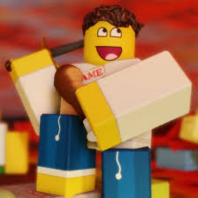
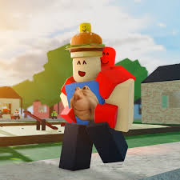
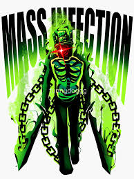

Forsaken-мої улюблені персонажі та поради по ним.
.jpg)
В цьому сайті, я буду розповідати про моїх улюблених персонажів з гри-Forsaken та поради по ним. Також зараз розповім трохи про мене, моє ім'я Якубєлович Іван, я починаючий програміст. Я живу в Україні, в Запорізькій області, я люблю гуляти на вулиці, грати в роблокс, а особливо, як всі зрозуміли в Forsaken.
Перший виживший це Ту Тайм.
.jpg)
Ту Тайм-ціна 500,це один із найважчих виживших та на ньому є дуже важкий теги-це Backstab та DashStab, спочатку в тебе можливо буде не виходить його робити, але все приходить з часом, тож удачі. Також планують добавити нового вбивцю Азура. І планують зробити новий LMS.
 LMS Azure X Two time
All Milestouns on Two Time
LMS Azure X Two time
All Milestouns on Two Time
Наступний виживший-це Шедлетский.
Shedletsky- безкоштовний виживший класу-Stanner, у нього є дві способности-1 це меч, Shedletsky виконує удар своїм мечем, hitbox якого дуже малий, але при попаданні у вбивцю, ти отримаєш money, exp та застаниш вбивцю на 4 секунди. І 2 способность-це поїдання курочки, Shedletsky зупиняється та їсть курочку, яка хілить приблтзно 50 хп. Також Shedletsky є админом роблокса та він створив вбивцю-1x1x1x1 та з ними створили музику LMS.
LMS 1x1x1x1 X Shedletsky All Milestounes Skins On Shedletsky.І останній виживший-007n7
007n7-виживший, ціна 500, класу Survivor. У нього є три способности, 1 способность-це запуск клона, при запуску клону ти становишся напівпрозорим, також якщо вбивця вдарить клона тоді тобі дадеться досягнення і тоді дадутся монети та exp, також по цій способности є настройка.Наступна способность-це телепорт, для телепортації потрібно приблизно 7 секунд коли полоска достигне кінця, тоді ти телепортуєшся в найдальшу точку від тебе на карті, але якщо ти телепортуєшся до вбивці, ти отримаєш досягнення. І як показано на картинці 007n7-це батько coolkida, і якщо проти кулкіда на LMS залишиться 007n7, тоді ввімкнеться музика.
007n7 x c00lKid Milestounes on 007n7.Наступний розділ-вбивці.
Першим вбивцей стане-Slasher.
.jpg)
Slasher-це безкоштовний вбивця, якого новачки важають відстойним, але я так не важаю, бо якщо ти зробиш хоча б 1 помилку, тоді тобі може настаи кінець, або ти станеш його ціллю. У Слешера є лише ближні атаки, які також б'ють по слешу, тому він доволі важкий персонаж. Я почав його качати і скажу, що це гарний вибір для прокачки( в мене на нього є М4 скин) Ще скажу про способки: Behead, Gashing Wood та Raging Pace. Коли ви бачите, що виживший близько з вами використайте Behead так ви заблокуєте його навики та нанесете урок. Далі йде Gashing Wood, коли хтось чине генератор то використайте Raging Pace + Gashing Wood, але будьте більш непридугадним і якщо все вийде, ви нанесете 70 урону А Raging Pace підсвідчує тобі ауру найближчого гравця та робить тебе неуязвимим( і не переключайтеся з однієї цілі на іншу).
All Milestounes on Slasher (my favourite skins).
Guest 666 - ціна 1666 монет це вбивця монстр, в лорі якого він дружив з нубом, але одного разу вони посорились і він став таким монстром. В цього вбивці є звичайний удар, урон якого 20, але при задержці кнопки Guest 666 втрачає 10 крові та робить ще один удар вперед, який зносить ще 10 урона та робить кровотечу, також якщо він попаде то йому дасться 15 крові, від цієї атаки врятує лише аптечка та піца Елліота. Наступна атака це ривок, який може також направлятися гравцем, навіть як стрибок, якщо вбивця задержить ривок і попаде у вижившого, він нанесе 40 урона та зробить кровотечу, а без задержки він просто наносе 26 замість 40 урона. Далі йде крик, якщо Guest 666 попаде у вижившого, то в гравця буде ефект розмиття екрану. Далі йде Blood Rush, Guest 666 може побачити всіх виживший із цією способностю. І остання способка це Blood Hunt, коли ти вмикаєш її то час зупиняється, тобі підсвідчує усіх виживших, у всіх робиться ефект потемніння та покраснілості екрану, урон від атак Guest 666 збільшується та його неможливо застанити, і якщо ти вбиваєш вижившого, то Blood Hunt подовжується на 15 секунд. Але це тимчасово. Також Noob та Guest666 мають свою музику на LMS.
Lms Noob X Guest 666. All Milestounes on Guest 666І останній кіллер це 1х1х1х1.
 Останній вбивця 1х1х1х1 це кіллер, який коштує 1150 монет. Перша атака це звичайний удар, який наносить 24 урона, далі йде Entalegment, 1х4 кидає свої мечі та при попаданні наносить 10 урона та станить гравця, виживші можуть або закрити всі папки щоб відстанитись, або чекати 5 секунд. Далі йде Mass Infection, 1х4 кидає удану хвилю, і чим ближче гравець стоїть до вбивці та в нього попадає ця атака, тим більше йому нанесеться (мені наприклад якось нанеслось 85 урона). Далі йде навик, який дозволяє 1х4 побачити усіх гравців на карті. І останнє це відродження клонів, при ударі клон наносить 20 урона, кількість клонів залежить від того, скільки гравців вбив 1х4, і якщо 1х4 вб'є свого клона, то він отримає швидкість 1, але якщо двох, під час дії швидкості 1, то він отримає швидкість 3. Від мене є три поради, перша це вмикати всевидіння на самому початку. Друга це якщо ти попав в гравця атакою Entelegment то підійдіть в притик до гравця, та зробіть Mass Infection, при попаданні вижившому нанесеться колосальний урон, і він може залишитися на один удар, але вбивця може не завжди попасти, як одним, так і другим. І останнє це відродження клонів використовувати на LMS бо гравцю буде дуже важко обійти всі атаки, а якщо ще приблизно від 5 до 8 клонів тоді це дуже дуже складно. І на отанок я скажу одну річ, 1 це те що 1х4 являється одним із найлегших вбивцю в грі. А LMS із Шедлетським я прикріпив в описі про Shedletsky. All New Milestouns on 1x1x1x1.Сподіваюсь я комусь із чимсь допоміг, і мій сайт буде вам в пригоді, тож усім пока та удачі.